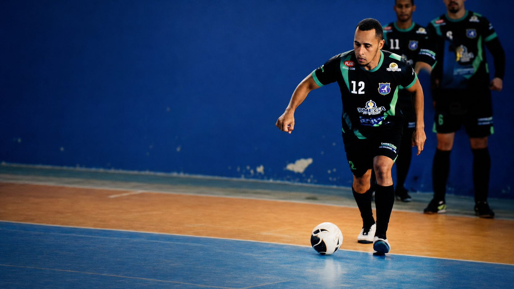
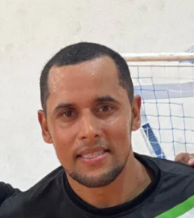
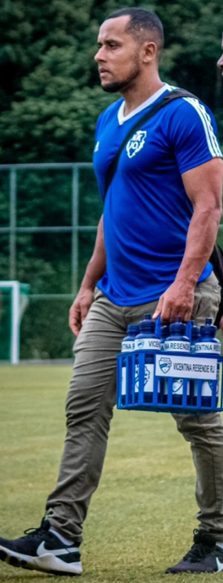
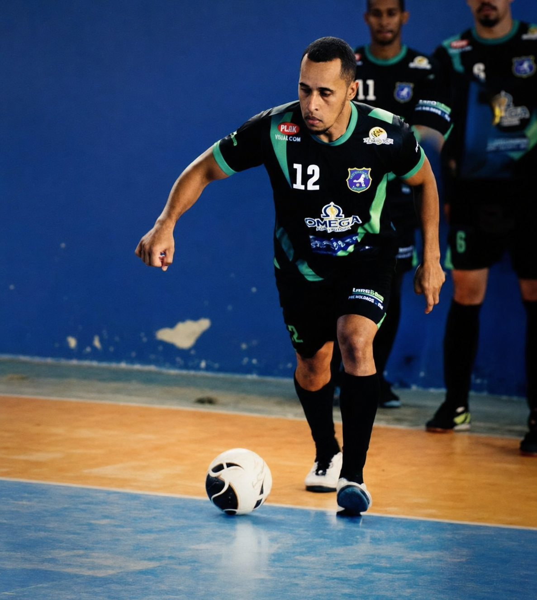

Hipertrofia
Estratégia, técnica e consistência para ganho de massa muscular.

Atleta de futsal · Personal Trainer
Treinamento personalizado para quem quer evoluir no corpo, no jogo e na rotina.
Especialidades
Estratégia, técnica e consistência para ganho de massa muscular.
Treinos personalizados para mais disposição, saúde e evolução real.
Força, mobilidade e resistência para sua rotina e performance.
Treino individual para desenvolver técnica, agilidade e tomada de decisão.


Sobre Walace
Com a vivência das quadras e o olhar de quem conhece a exigência da performance, Walace oferece um acompanhamento próximo e adaptado ao seu momento.
Do condicionamento para o dia a dia ao desenvolvimento técnico no futsal, cada treino é construído com foco, segurança e resultado.
Acompanhe no Instagram ↗Treinos em ação

Treino de verdade não é fórmula pronta. É presença, ajuste e trabalho contínuo para alcançar a sua melhor versão.
Ver conteúdo no Instagram ↗Vamos conversar?
Entre em contato para agendar seu atendimento e conversar sobre o melhor treino para o seu objetivo.